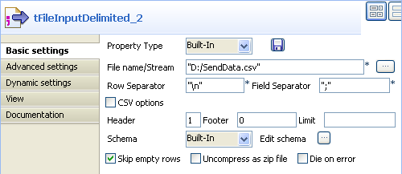
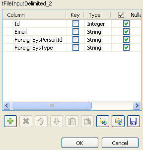
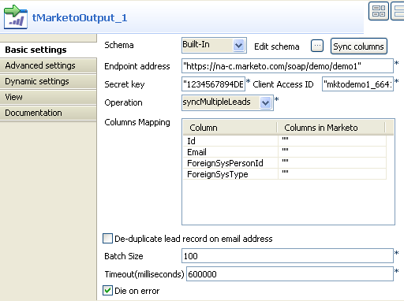
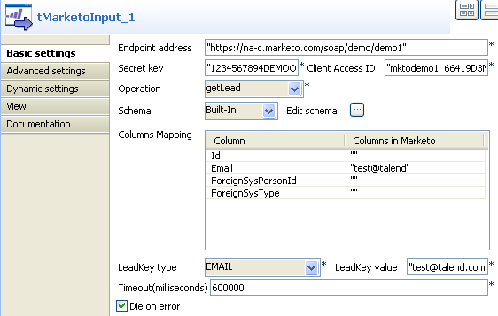
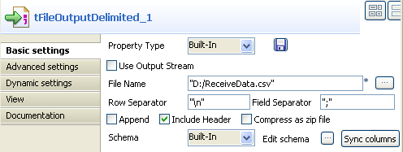
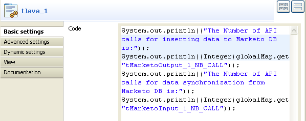
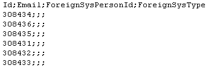
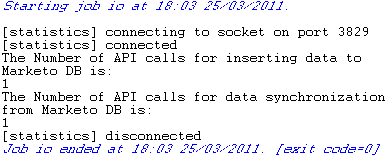

|
Famille de composant |
Business/Cloud | ||||
|
Fonction |
Le composant tMarketoOutput envoie des données vers un serveur Web Marketo. | ||||
|
Objectif |
Ce composant vous permet d’écrire des données dans une base de données Marketo sur un serveur Web. | ||||
|
Basic settings |
Schema et Edit schema |
Un schéma est une description de lignes, i.e., il définit le nombre de champs qui sont traités et passés au composant suivant. Le schéma est soit local (built-in) soit distant dans le Repository. Cliquez sur Edit Schema pour modifier le schéma. Notez que si vous modifiez le schéma, il devient automatiquement built-in. Cliquez sur Sync columns pour récupérer le schéma du composant précédent. | |||
|
|
|
Built-in : Propriétés utilisées ponctuellement. | |||
|
|
|
Repository : Sélectionnez le fichier où sont stockées les propriétés du composant. Les champs suivants sont alors pré-remplis à l’aide des données collectées. | |||
|
|
Endpoint address |
URL du service Web Marketo appelé par l’API ou les APIs SOAP. | |||
|
|
Secret key |
Saisissez le code d’authentification crypté fourni par Marketo.
| |||
|
|
Client Access ID |
Saisissez l’identifiant utilisateur permettant d’accéder au service Web Marketo.
| |||
|
|
Operation |
Les options de cette liste vous permettent de synchroniser les données des prospects entre Marketo et un système externe. syncLead : Cette option sollicite une opération d’insertion ou de mise à jour pour un enregistrement de prospect. syncMultipleLeads : Cette option sollicite une opération d’insertion ou de mise à jour pour plusieurs enregistrements de prospects regroupés par lots. | |||
|
|
Columns Mapping |
Vous pouvez configurer les conditions de mapping en modifiant le schéma dans Edit Schema. Par défaut, les noms des colonnes des champs contenus dans Column sont les mêmes que ceux du schéma.
| |||
|
|
De-duplicate lead record on email address |
Cochez cette case afin de dédoublonner et de mettre à jour les enregistrements des prospects en utilisant l’adresse e-mail. Décochez cette case si vous souhaitez créer un autre enregistrement de prospect contenant la même adresse e-mail.
| |||
|
|
Batch Size |
Limite maximale du nombre d’enregistrements par lot à synchroniser avec les données de prospects.
| |||
|
|
Timeout (milliseconds) |
Saisissez en millisecondes le délai avant suspension de la requête sur le service Web Marketo.
| |||
|
|
Die on error |
Cette case est cochée par défaut et stoppe le Job en cas d’erreur. Décochez cette case pour terminer le traitement avec les lignes sans erreur, et ignorer les lignes en erreur. Au besoin, vous pouvez récupérer les lignes en erreur via un lien Row > Reject. | |||
|
Advanced settings |
tStatCatcher Statistics |
Cochez cette case pour collecter les données de log au niveau du composant. | |||
|
Utilisation |
Ce composant est généralement utilisé en tant que composant de sortie. Un composant d’entrée est nécessaire. | ||||
|
Limitation |
n/a | ||||
![[Note]](../images/note.png)
Le scénario suivant décrit un Job à cinq composants qui a pour but d’insérer des enregistrements de prospects dans une base de données Marketo et d’écrire ces enregistrements dans un fichier local. Au terme de ce processus, le nombre d’appels d’API est affiché dans la console de la vue Run.
A partir de la Palette, déposez les composants tMarketoOutput, tMarketoInput, tFileInputDelimited, tFileOutputDelimited et tJava dans l’espace de modélisation graphique.
Connectez le composant tFileInputDelimited au tMarketoOutput à l’aide d’un lien Row > Main.
Connectez le composant tMarketoInput au tFileOutputDelimited à l’aide d’un lien Row > Main.
Connectez le composant tFileInputDelimited au tMarketoInput à l’aide d’un lien Trigger > OnSubjectOk.
Connectez le composant tMarketoInput au tJava à l’aide d’un lien Trigger > OnSubjectOk.
Double-cliquez sur le composant tFileInputDelimited pour afficher l’onglet Basic settings de sa vue Component et définir ses propriétés.
Cliquez sur le bouton [...] à côté du champ File name/Stream et sélectionnez un fichier local pour l’insertion de données. Pour ce scénario, il s’agit de D:/SendData.csv.
Cliquez sur le bouton [...] à côté du champ Edit schema pour configurer le schéma manuellement.
Cliquez sur le bouton [+] pour ajouter quatre colonnes : Id, Email, ForeignSysPersonId et ForeignSysType. Configurez le Type de Id à Integer et laissez les autres colonnes telles qu’elles sont. Cliquez ensuite sur OK pour enregistrer les paramètres.
Dans le champ Header, saisissez 1 et laissez les autres paramètres tels qu’ils sont.
Double-cliquez sur le composant tMarketoOutput pour afficher l’onglet Basic settings de sa vue Component et définir ses propriétés.
Cliquez sur le bouton Sync columns pour récupérer le schéma défini dans le composant tFileInputDelimited. Renseignez le champ Endpoint address avec l’adresse URL du serveur Web Marketo. Pour ce scénario, saisissez https://na-c.marketo.com/soap/demo/demo1.
Notez que l’URL utilisée dans ce scénario est essentiellement destinée à la démonstration.
Renseignez le champ Secret key avec le code d’authentification crypté fourni par Marketo. Pour ce scénario, saisissez 1234567894DEMOONLY987654321.
Renseignez le champ Client Access ID avec l’identifiant utilisateur. Pour ce scénario, saisissez mktodemo1_1234567894DEMOONLY987654321.
A partir de la liste Operation, sélectionnez syncMultipleLeads. Saisissez le délai (en millisecondes) avant suspension de la requête dans le champ Timeout (milliseconds). Pour ce scénario, utilisez la valeur par défaut : 600000.
Double-cliquez sur le composant tMarketoInput afin d’afficher l’onglet Basic settings de sa vue Component et définir ses propriétés.
Dans la liste Operation, sélectionnez getLead.
Dans le tableau Columns Mapping, saisissez test@talend.com dans la colonne Columns in Marketo correspondant à la colonne Email.
Notez que les données utilisées dans ce scénario sont essentiellement destinées à la démonstration.
Dans la liste LeadKey type, sélectionnez EMAIL et saisissez test@talend.com dans le champ LeadKey value.
Laissez les autres paramètres tels qu’ils sont dans le composant tMarketoOutput.
Double-cliquez sur le composant tFileOutputDelimited pour afficher l’onglet Basic settings de sa vue Component et définir ses propriétés.
Cliquez sur le bouton [...] à côté du champ File name pour synchroniser les données dans un fichier local. Dans ce scénario, le chemin d’accès au fichier est D:/ReceiveData.csv.
Cliquez sur le bouton Sync columns et laissez les autres paramètres tels qu’ils sont.
Double-cliquez sur le composant tJava pour ajouter du code dans l’onglet Basic settings de sa vue Component.
Dans le champ Code, saisissez le code suivant afin de compter le nombre d’appels d’API effectués pendant les opérations sur les données :
System.out.println(("The Number of API calls for inserting data to Marketo DB is:")); System.out.println((Integer)globalMap.get("tMarketoOutput_1_NB_CALL")); System.out.println(("The Number of API calls for data synchronization from Marketo DB is:")); System.out.println((Integer)globalMap.get("tMarketoInput_1_NB_CALL"));
Sauvegardez votre Job.
Appuyez sur F6 pour l’exécuter.
Les enregistrements des prospects insérés dans la base de données Marketo sont écrits dans le fichier D:/ReceiveData.csv.
Le nombre total d’appels d’APIs durant les opérations sur les données est affiché dans la console de la vue Run.